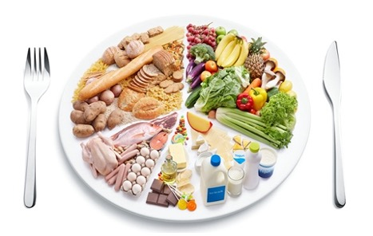

College Age Women Nutrition (18-25)
Example of Nutrition Requirements

Grains:
• ¼ cup oatmeal
• ½ cup brown rice
Vegetables:
• ½ cup snow peas
• ½ broccoli
• 1 cup bell peppers
• 6 baby carrots
Fruits:
• ½ cup strawberries
• 1 Bannana
• 1/8 cup dried cranberries
Proteins:
• 16 almonds
• 2 oz hummus
• 2 oz tofu
Dairy:
• 1 string cheese
• 1 cup frozen yogurt
• 1 cup yogurt
• ½ cup skim milk